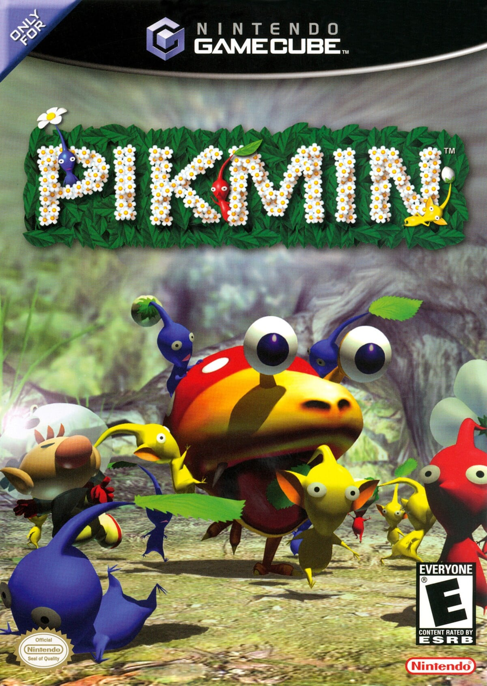
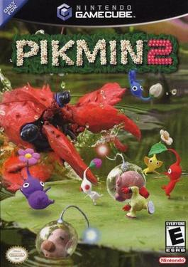
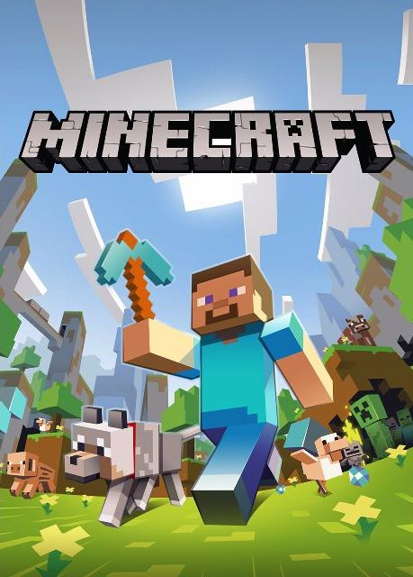
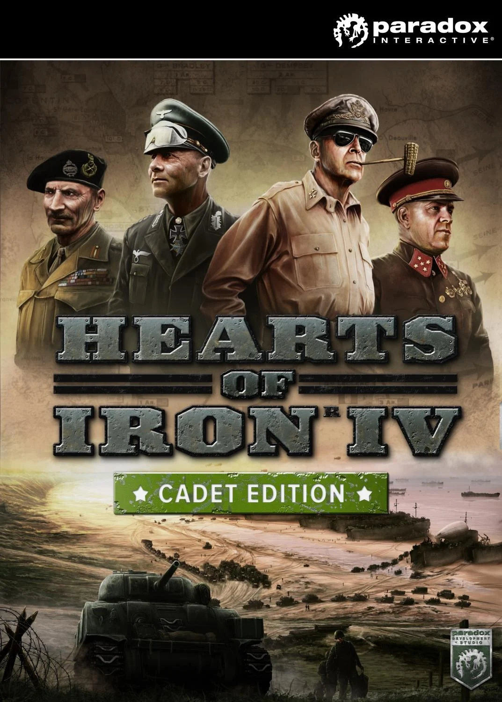
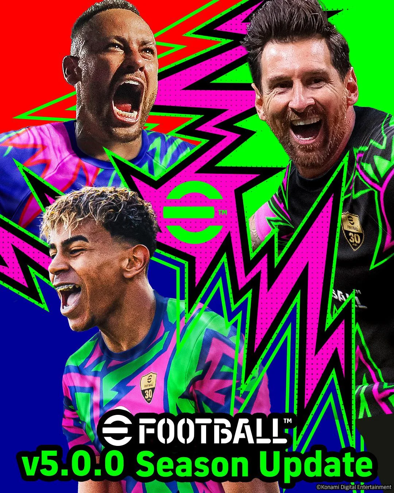
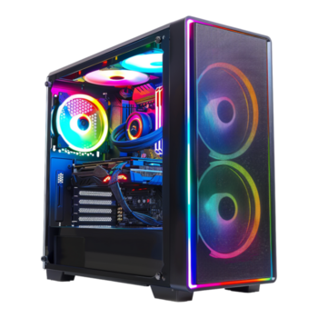
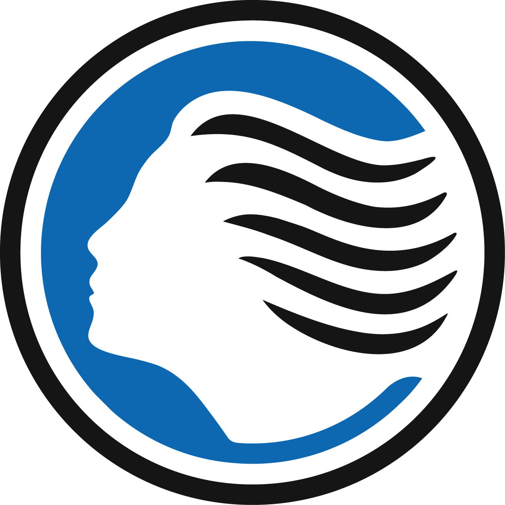

I am Luca Pezzera. I live in Bergamo, Italy. I am 15 years old, and I currently study at Istituto Politecnico IT highschool. I love coding.
The videogames that I like
 Super Smash Bros. Melee, 2001
Super Smash Bros. Melee, 2001
Pikmin 1, 2001
Pikmin 2, 2004 Super Mario 64, 1996
Super Mario 64, 1996
Minecraft, 2009
Hearts of Iron IV, 2016
eFootball, 2021

I cheer for Atalanta BC.
As a proud Bergamasco, supporting Atalanta is in my blood. While our team is often underrated by outsiders, we made history on May 22nd, 2024, by winning the Europa League final 3-0 against Leverkusen in Dublin. It was our first major title since the 1960s! To me, Atalanta is a growing team, despite it not being as popular as AC Milan or Juventus, it is still a football team that Bergamascos care a lot for. Including myself.

My favorite tank
Out of all the armored vehicles in military history, the Italian C2 Ariete (also known as the Ariete AMV) is by far my favorite tank. While mainstream attention usually goes to the heavy German Leopards or American Abrams, the Ariete is a true underdog that deserves way more credit. What makes it so special to me is its brilliant philosophy of design. Instead of just stacking heavy armor, the C2 upgrade focuses on high mobility and cutting-edge technology. With a massive new 1500-horsepower engine packed into a chassis that is significantly lighter than its NATO rivals, it has an incredible power-to-weight ratio. It is fast, agile, and deadly. On top of that, it’s equipped with world-class Leonardo optics and a modern digital command system, making it incredibly smart on the battlefield. It’s a perfect mix of aggressive aesthetics, Italian engineering, and high-tech warfare. It might be underrated by the masses, but to me, it's the ultimate modern war machine.